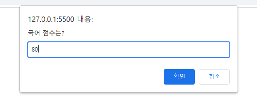
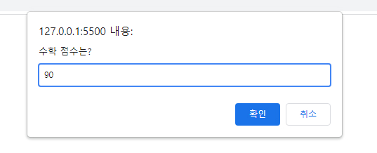
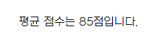

함수
함수란 자바스크립트 코드를 저장하고 필요할 때 마다 호출하여 사용할 수 있는 코드 저장소입니다. function이라는 키워드를 이용하여 선언하고 결괏값을 반환합니다.
선언적 함수
기본형
function 함수명(){
자바스크립트 코드(함수 정의문);
}함수 정의문안에 작성된 코드는 즉시 실행되지 않고 메모리에 할당되어 대기하고 있다가 함수가 호출되면 실행합니다.
함수 호출
함수명();
함수는 정의되고나서 한번 이상 호출(선언)이 되어야만 실행됩니다. 이것을 선언적 함수라고 말합니다.
선언적 함수 예제
myFnc(); //함수 호출문이 먼저 나와도 호이스팅 방식이 적용되어 정상적으로 함수를 호출합니다.
function myFnc(){
document.write("Hello", "<br>");
}
myFnc(); //함수 호출
익명 함수
함수명을 정의하는 대신 변수명에 함수 코드를 저장하는 방식입니다. 익명 함수의 소스 코드는 변수값이므로 끝에 세미콜론 ; 을 대입합니다. 익명 함수는 호출 시 변수명을 함수명처럼 사용하면 됩니다.
기본형
참조 변수 = function(){
자바스크립트 코드
};익명 함수 예제
var count = 0;
var theFnc = function(){
document.write("Hello", "<br>");
};
theFnc(); //함수 호출
매개변수 함수
함수를 호출할 때 데이터를 전달 할 수 있는 함수입니다. 전달된 값은 매개변수가 받아 함수 정의문에서 사용할 수 있게 됩니다.
기본형
function 함수명(매개변수1, 매개변수2, ..., 매개변수n){
자바스크립트 코드
}
함수명(데이터1, 데이터2, ..., 데이터n);
매개변수 함수 예제
function myFnc(name, area){ //전달받은 데이터가 name과 area라는 매개변수에 들어감.
document.write("안녕하세요" + name + "입니다.", "<br>");
document.write("사는 곳은" + area + "입니다.", "<br><br>");
}
myFnc("홍당무", "서울"); //"안녕하세요 홍당무입니다. 사는 곳은 서울입니다."출력됨
myFnc("깍두기", "부산"); //"안녕하세요 깍두기입니다. 사는 곳은 부산입니다."출력됨
리턴값 함수
return문은 함수에서 결괏값을 반환할 때 사용합니다. 함수에서 return문이 실행되면 반복문의 break문과 비슷하게 코드가 강제로 종료됩니다.
기본형
function 함수명() { //1. 함수가 정의되어 메모리에 할당됩니다.
자바스크립트 코드1; //3. 함수가 실행됩니다.
return 데이터(결괏값); //4. 함수의 결괏값이 반환되고 이 값은 변수에 저장됩니다.
자바스크립트 코드2; 윗줄에 return문으로 인해 코드2는 무시됩니다.
}
var 변수 = 함수명(); //2. 함수가 호출되어 결괏값이 변수에 저장됩니다.
리턴값 함수 예제1
<script>
function testAvg(arrData) {
var sum = 0;
for(var i=0; i<arrData.length; i++){
sum += Number(prompt(arrData[i]+ " 점수는?", "0"));
}
var avg = sum / arrData.length;
return avg;
}
var arrSubject = ["국어", "수학"];
var result = testAvg(arrSubject);
document.write("평균 점수는 " + result + "점입니다.")
</script>
리턴값 함수 예제1 출력 결과
 : 배열 arrSubject을 testAvg함수의 매개변수arrData가 받아서 첫번째 값인 "국어"를 prompt로 출력하고 점수를 sum에 추가하는 화면입니다. : 이어서 "수학"이 출력되고 점수를 입력받는 화면입니다.
: testAvg함수는 for문으로 국어와 수학점수를 입력받은 후 평균값을 계산하여 반환해줍니다.
리턴값 함수 예제2
<script>
var num = 1;
function gallery(direct) {
if(direct) {
if (num == 7) return;
num++;
} else {
if (num == 1) return;
num--;
}
var imgTag = document.getElementById("photo");
imgTag.setAttribute("src", "img/color_" + num + ".jpg");
}
</script>
<div id="galleryZone">
<p><img src="img/color_1.jpg" id="photo" alt=""></p>
<p>
<button onclick="gallery(0)">이전</button>
<button onclick="gallery(1)">다음</button>
</p>
</div>